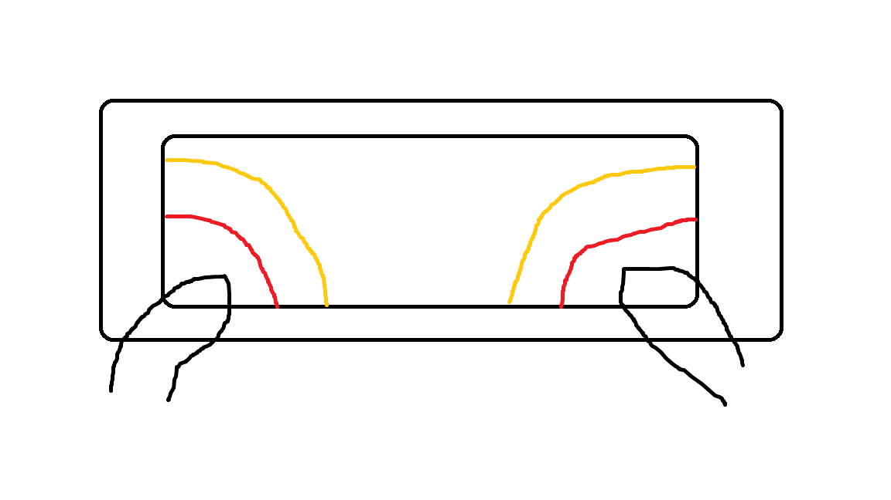

Genius
The mobile game interface is one of the most important elements of mobile game design. The user uses the interface to interact with the game, to control his/her avatar. The design of the interface alow user to flawlessly operate and use the game or in the worst case will make the player angry and in result abandon our game. Therefore, the interface should be design with great care. At first we should think:
First take into account a person that plays the games with appropriate care. Then the player will probably take the "Gamer Stance". 
The player keep the phone in landscape position with two thumbs near the bottom corners of the screen. We can easily see that a small part of the screen is easily accessible (Red area), a little bigger area that can be stil accessed (Orange area) and the rest of the screen very hard for interaction.
Casual or tablet playerThe player keeps the device in one hand and uses the secund one to operate on the screen. The hole area of the screen is accessible, but the user cannot touch instantly two distant places.
Subway playerThe player plays for short time usually in rush. Keeps the phone in one hand, probably in portrait orientation, controlling it with thumb of this hand. This type of player has minimal reach and the control area is very small, additionally multitouch control method is unacceptable.
This three types of players demand totally different interface for the game. There is no solution that will fit to any two types of the player. During the design stage, the developing team has to decide what type of player they expect. Moreover when we think about contextual games it is possible that the external context will prefer one of these types of interaction for example if player has to run/move with the phone, we have a subway type player, no sophisticated interaction is possible during movement.
Let us now cover some basic methods of interaction and their implementation in Cordova.
This method of interaction have been used in this course all the time. All types of buttons, clickable images represents this simplest control method. However for real fast interaction it is suggested to use touch events instead of click events. The reason is that mobile devices have to spend some time (around 300 milliseconds) to translate native touch event to a click one.
The mobile devices natively support touch events: touchstart, touchend, touchcancel, touchmove. As for default touch support multitouch, it tracks more than one finger separately. The simple example below presents how touches can be used for simple drawing application.
As usual starting with html file:
Now we will build a index.js file. First we have to register event listeners for all touch events.
var app = {
initialize: function() {
document.addEventListener('deviceready', this.onDeviceReady.bind(this), false);
}, onDeviceReady: function() {
var canva = document.getElementById("drawing_canva");
canva.addEventListener("touchstart", this.onTouchStart.bind(this), false);
canva.addEventListener("touchend", this.onTouchEnd.bind(this), false);
canva.addEventListener("touchmove", this.onTouchMove.bind(this), false);
this.lastTouch = {x:null, y:null};
this.colors = ['#aaaaaa', '#ffaaff', '#01ffe3'];
this.color = 0;
},
We define three fields that will be used later:
Now the operations connected to specific touch events. Let us start with touchstart:
onTouchStart: function(event){
event.preventDefault();
console.log("TouchStart");
var touches = event.changedTouches;
this.color++;
if (this.color== this.colors.length) this.color=0;
this.drawBall(touches[0].pageX, touches[0].pageY);
},
The first line event.preventDefault is a very important one, we do not want the device to process the event further, this could for example result in firing a click event. Next, we obtain the information about all touches via event.changedTouches, every touch have the properties pageX, pageY that contains coordinates of touched place. The first line event.preventDefault is a very important one, we do not want the device to process the event further, this could for example result in firing a click event. Next, we obtain the information about all touches via event.changedTouches, every touch have the properties pageX, pageY that contains coordinates of touched place.
The drawing of a ball uses a known canvas drawing:
drawBall: function(x, y){
console.log("drawing: ["+x+","+y+"]");
this.lastTouch.x=x;
this.lastTouch.y=y;
var el = document.getElementById("drawing_canva");
var ctx = el.getContext("2d");
ctx.beginPath();
ctx.arc(x, y, 4, 0, 2 * Math.PI, false);
ctx.fillStyle = this.colors[this.color];
ctx.fill();
},
Here we record the new x, y as the lastTouch coordinates and draw a circle on this position. Here we record the new x, y as the lastTouch coordinates and draw a circle on this position.
As we would like to continue drawing while the touch event continues, we do that in touchmove event handler:
onTouchMove: function(event){
event.preventDefault();
console.log("TouchMove");
var touches = event.changedTouches;
this.moveBall(touches[0].pageX, touches[0].pageY);
},
moveBall: function(x, y){
console.log("drawing: ["+x+","+y+"]");
var el = document.getElementById("drawing_canva");
var ctx = el.getContext("2d");
ctx.beginPath();
ctx.moveTo(this.lastTouch.x, this.lastTouch.y);
ctx.lineTo(x, y);
ctx.lineWidth = 4;
ctx.strokeStyle = this.colors[this.color];
ctx.stroke();
this.lastTouch.x=x;
this.lastTouch.y=y;
}
The drawing when finger is moving, is done using ctx.moveTo and ctx.lineTo methods, after the end of operation we reset the lastTouch coordinates. The drawing when finger is moving, is done using ctx.moveTo and ctx.lineTo methods, after the end of operation we reset the lastTouch coordinates.
If we comment the last two lines, the drawing method will be totally different, however, this can be a suggestion how to implement virtual joystick controller. If we comment the last two lines, the drawing method will be totally different, however, this can be a suggestion how to implement virtual joystick controller.
Running this exiting code we will see that when touches start we draw a circle, after that the lines that follow the movement are drawn. The final result is not symmetric as we can easily see the ball at the beginning of the line and nothing at its end. To repair this we add appropriate touchend handler:
onTouchEnd: function(event){
event.preventDefault();
console.log("TouchEnd");
var touches = event.changedTouches;
this.drawBall(touches[0].pageX, touches[0].pageY);
},
In the presented example we have skipped touchcancel event as not applicable.
One of the nicest control method is virtual joystick. We can distinguish two basic vjoy concepts: stationary vjoy - always on the same place, and dynamical one - appears with touchstart. At first let us cover the stationary one. In this example we will use the ball code from accelerator case.
In the html we can notice additional canvas element for our virtual joy, this controller will be placed within the area that the ball is moving.
All the javascript code that is connected to ball animation is left unchanged. You can notice that the method update of the object VJoy handles both events touchstart and touchmove. As expected object VJoy represents the logic for our virtual Joy. All the javascript code that is connected to ball animation is left unchanged. You can notice that the method update of the object VJoy handles both events touchstart and touchmove. As expected object VJoy represents the logic for our virtual Joy.
Now we can discuss the code for our virtual joy:
%
The VJoy object needs information about wrapping canvas, the ball that is to be controlled and scale all that is provided during construction. The object have the fields scale, actualPosition and positionOffset. Actual position will represent a position of user touch and position offset stores coordinates of left top corner of wrapping, the meaning of scale property will be discussed later.
All the interface drawing is done in drawVJoy methods. The control interface consist of two circles, one in the middle is used to show the center, and the bigger one bounds the area. When player touches the control area an additional blue line will show the movement direction of the ball. At the start of the game when there is no actual position no blue line is shown.
The method update connects the control interface with touches and movement of the ball. We have to take into account that relative position of touch to the middle point of the interface should be used for steering the ball movement. That is why actualPosition is connected to positionOffset and half of wrapping canvas width (lines 14-15). Additionally we do not want the size of control interface (canvas width) to have a linear impact on ball velocity, for that reason a scale property was used (lines 16-17). After setting the velocity and actual position the vjoy is drawn (line 18). The method update connects the control interface with touches and movement of the ball. We have to take into account that relative position of touch to the middle point of the interface should be used for steering the ball movement. That is why actualPosition is connected to positionOffset and half of wrapping canvas width (lines 14-15). Additionally we do not want the size of control interface (canvas width) to have a linear impact on ball velocity, for that reason a scale property was used (lines 16-17). After setting the velocity and actual position the vjoy is drawn (line 18).
This time we would like our virtual Joy to appear at the place of touchstart and operate only via moving the finger. There is no many changes we have to add. First we crate a new class file DynamicVJov.js.
The class contains a two new methods touchStart and touchEnd. The first one sets the new position of interface wrapping canvas, shows this wrapping canvas and uses known from previous example VJoy class implementation of update method. The touchEnd method just hide the wrapping canvas. The class contains a two new methods touchStart and touchEnd. The first one sets the new position of interface wrapping canvas, shows this wrapping canvas and uses known from previous example VJoy class implementation of update method. The touchEnd method just hide the wrapping canvas.
The main js file differs by creation of VJoy field (line 12) the new class DynamicVJoy is used instead of VJoy. There are also a new bindings of handler for touchstart and touchend events. Both handlers uses methods of the new derived class DynamicVJoy. The main js file differs by creation of VJoy field (line 12) the new class DynamicVJoy is used instead of VJoy. There are also a new bindings of handler for touchstart and touchend events. Both handlers uses methods of the new derived class DynamicVJoy.
In the html file we have only few changes, the first one is to make vjoy_canvas invisible at the start (display:none). Additionally in line 20 we add a new file DynamicVJoy.js and in next line a new main .js file is included. In the html file we have only few changes, the first one is to make vjoy_canvas invisible at the start (display:none). Additionally in line 20 we add a new file DynamicVJoy.js and in next line a new main .js file is included.
We all know the game angry birds, In that game the control used something like a catapult mechanics, player using continous touch define the velocity vector of bird and a end of touch event the movement of the bird starts. In our example we will use balls and existing DynamicVJoy, when player touch a ball the VYoy will appear, when player stop touching the ball will start move with appropriate velocity.
Let's start with html file:
As we see there are two balls. The files Ball.js, VJoy.js and DynamicVJoy.js are exactly the same as in the last example, we have only two new files code4.js and CatapultDVJoy.js.
Now look deeper into the main code4.js file:
In the starting method onDeviceReady we can see initialisation of two Ball objects (ball1 line 13, and ball2 line 18). We have to remember we have two objects that represent our ball
We can see that each ball have a event listener for touchstart, the rest of listeners are connected to the document object. We can see that each ball have a event listener for touchstart, the rest of listeners are connected to the document object.
Finally we will analyze the CatapultDVJoy.js:
As a VJoy appears after touchstart event we have to find what object was touched (using touch.target line 9), and get a reference to a proper Ball object this.ball = touch.target.logic_ball.
The method update is almost the same as in VJoy, class, except here we do not change value of velocity of the controlled ball.
In the method touchEnd we hide our VJoj interface and set the appropriate velocity of controlled ball (lines 32, 33). In the method touchEnd we hide our VJoj interface and set the appropriate velocity of controlled ball (lines 32, 33).
As we can see when the player touch one of the balls the VJoy interface appears at its position, however the ball is still moving away from the VJoy. We could solve that by stopping the time (freezing the game) or stopping the ball. The latter is equivalent to setting velocity of the ball to (0,0) at the moment of the first touch. Please make the appropriate changes to the project.
Additionally, the big circle in the VJoy interface is not needed, Please repair that too.
Copyright Genius.